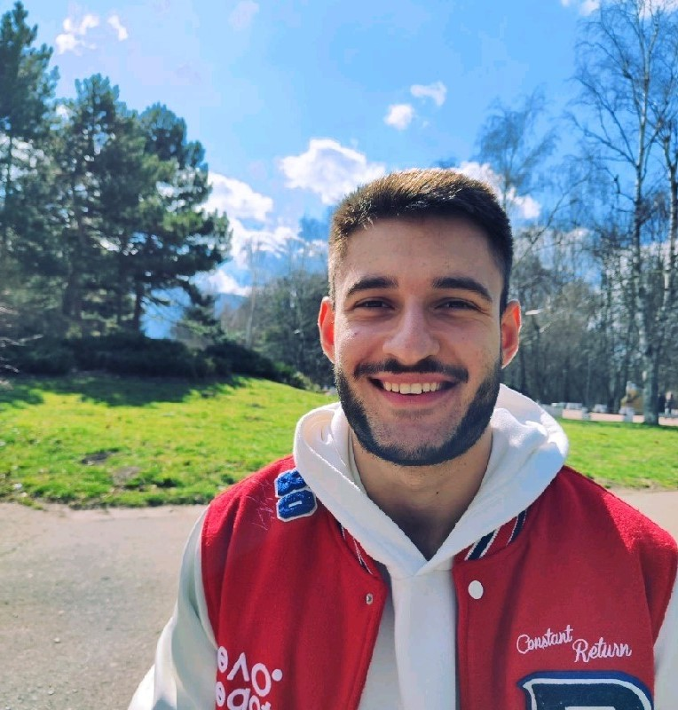

През свободното си време обичам да:
- Тренирам на площадка или в спортна зала
- Чета развлекателна литература
- Играя тенис на корт с приятели
- Гледам филми с приятелката ми
- Играя игри (мобилни или настолни)

Здравейте! Казвам се Йордан и съм студент от ФМИ специалност Софтуерно инженерство. Роден съм в град Силистра на 15 юли 2002 година. Все още не работя като програмист, но скоро това ще се промени.Имам по-малка сестра, казва се Тея, но за разлика от мен, тя иска да работи като ветеринарен лекар. През изминалите месеци се запалих по декларативния стил на програмиране, какъвто е функциналното програмиране. Придобих знания във функционални езици като Haskell и Scheme и те бързо ми се превърнаха в едни от любимите такива. Като език за писане на императивен стил на програмен код любим ми е Java. За в бъдеще имам интерес да се занимивам предимно с разработка на уеб приложения, свързани с технологии като Spring Boot, Angular, React и др.
През свободното си време обичам да: